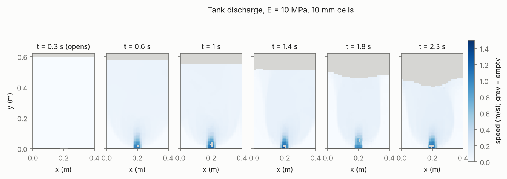
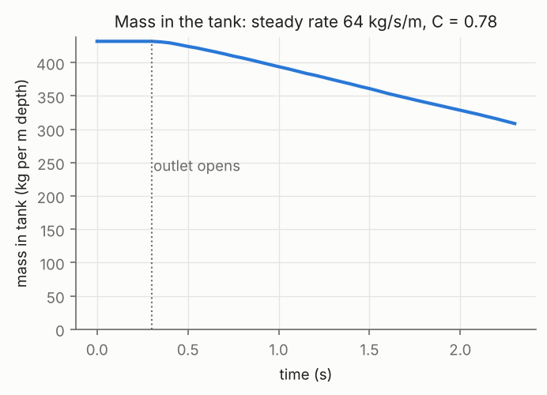

Quick start: empty a silo
This page runs the siloDischarge tutorial from start to finish: a 2D
tank of sand-like material settles under gravity, then a slot in its floor opens and the
tank empties. It shows what a case contains, how to run it and how to read the results.
The case
| Value | |
|---|---|
| Tank | 0.40 m wide, filled to 0.60 m, plane strain (one cell deep) |
| Outlet | a 0.06 m slot in the middle of the floor, closed until 0.3 s |
| Material | density 1800 kg/m³, Young's modulus 10 MPa, Poisson's ratio 0.3, Mohr-Coulomb friction angle 35°, no cohesion |
| Friction law | \(\mu(I)\): friction rises with the shear rate, grains 1 mm |
| Walls and floor | wall friction angle 20° |
| Mesh | 10 mm square cells, 40 × 62 |
| Run time | about 11 minutes on one core (40 s with a softer material, see below) |
Run it
Load OpenFOAM and build celFoam first (Installation). Then:
cd tutorials/siloDischarge
./Allrun # E = 10 MPa, about 11 minutes
python3 plot.py # pictures and the discharge rateVariants:
./Allrun 0.1 # E = 0.1 MPa: a softer material, about 40 s
./Allrun 10 4 # E = 10 MPa on 4 processors
./Allclean # back to the clean caseAllrun does four things, each logged to a log.<program> file:
restore0Dircopies the initial fields from0.origto0.blockMeshbuilds the mesh fromsystem/blockMeshDict.setFieldsfills the tank: material fractionalpha= 1 and density 1800 below 0.6 m, empty (void) above.celFoamruns the simulation (withdecomposePar, a parallel run andreconstructParwhen more than one processor is asked for).
Two time scales matter here. The time step is set by the elastic wave speed \(\sqrt{E/\rho}\), so a stiffer material needs more, smaller steps: 10 MPa takes about 15 times as long as 0.1 MPa. The discharge rate barely depends on \(E\), so a soft material is a cheap way to try a setup out.
What is in the case
siloDischarge/
├── 0.orig/alpha, rho initial fields (setFields overwrites the inside)
├── constant/g gravity vector
├── constant/materialProperties material, walls, outlet, solver options
├── system/blockMeshDict the mesh
├── system/setFieldsDict where the material starts
├── system/controlDict end time, writing, time-step and settling controls
├── system/decomposeParDict how to split the mesh for parallel runs
├── system/fvSchemes, fvSolution required by OpenFOAM, not used by celFoam
├── Allrun, Allclean, plot.pyThe heart of the case is constant/materialProperties:
rho 1800; // density, kg/m^3
freeSurface yes; // material plus void: cells can be part full or empty
type mohrCoulomb; // material model
E 1e+07; // Young's modulus, Pa
nu 0.3; // Poisson's ratio
phi 35; // friction angle, degrees
c 0; // cohesion, Pa
psi 0; // dilation angle, degrees
sigmaT 0; // tensile strength, Pa
mu2 0.961813; // mu(I): friction at high shear rate
I0 0.279; // mu(I): reference inertial number
d 0.001; // grain diameter, m
rhoS 2650; // grain density, kg/m^3
shearCap yes; // numerical rules for flowing granular material
spreadLayers yes; // (the "T0 rule set", see the case setup page)
flowImpedance yes;
normalCap yes;
walls // one entry per wall patch
{
left { friction 20; } // wall friction angle, degrees
right { friction 20; }
bottom { friction 20; }
top { friction 0; }
}
outlets
{
outlet { friction 20; openTime 0.3; } // a floor until 0.3 s, then open
}And in system/controlDict, beside the usual OpenFOAM entries:
endTime 2.3; // settle 0.3 s, then 2 s of discharge
deltaT 1e-5; // overwritten every step by celFoam
writeControl adjustableRunTime;
writeInterval 0.05;
maxCo 0.4; // fraction of the stable (CFL) time step used
gravityRamp 0.1; // gravity grows from 0 over 0.1 s
damping 250; // velocity damping (1/s) while settling, off when the outlet opensEvery keyword is explained on the case setup page.
Reading the log
log.celFoam first lists the settings the solver understood: material model,
gravity and ramp, damping, each wall and its friction, each outlet and when it opens,
and the rules that are switched on. Check this block when you set up a new case: a
misspelt wall name or a switch left off shows up here.
Then, every step:
Time = 0.30012 deltaT = 2.53e-05and at every write time:
Total mass = ... (kg in the mesh, which is 0.01 m deep)
Total momentum = ...
Discharged mass = ... (left through outlets so far)
Fed mass = ... (came in through inlets so far)Divide masses by the mesh depth (0.01 m) for values per metre of depth, as
plot.py does. The line Outlet outlet opened at t = 0.3 s; damping off marks the opening.
Fields written
Each write time folder (0.05, 0.1, ...) holds:
| Field | Meaning | Unit |
|---|---|---|
alpha | material volume fraction: 1 full, 0 empty (void) | – |
rho | density of the material in the cell | kg/m³ |
U | velocity | m/s |
sigma | Cauchy stress, positive in tension (symmetric tensor) | Pa |
epsP, epsPEq | plastic strain tensor and equivalent plastic strain | – |
uniform/eulerianSolid | discharged and fed mass and other state needed to restart | – |
Some options write more fields, for example g (fluidity of the nonlocal law) and
pc (preconsolidation pressure of the compaction cap).
Results
Open the case in ParaView with touch silo.foam; paraview silo.foam, or run
python3 plot.py, which writes the two pictures below and rate.txt.


A steady rate that does not depend on the fill height is what experiments show for silos, and the Beverloo correlation predicts it Beverloo et al. 1961. For a slot of width \(D\) in 2D, per metre of depth,
$$W = C\,\rho\,\sqrt{g}\,D^{3/2},$$where \(\rho\) is the bulk density and \(C\) a constant of order 1. Here \(C = 64/(1800\cdot\sqrt{9.81}\cdot 0.06^{1.5}) \approx 0.78\). The validation page compares celFoam with experiments and other solvers in more detail.
Next steps
- Change the outlet width in
system/blockMeshDict(vertices 1, 2, 9, 10 and the block cell counts) and see the rate change with \(D^{3/2}\). - Try the other tutorials:
siloCohesion(cohesive material that arches over the outlet),siloFed(material fed in at the top while the tank empties),stlSilo,stlHopper,stlTank(walls from STL surfaces),rigidBodyMotion(a body pushed through the material). - Read Meshing before building your own geometry.